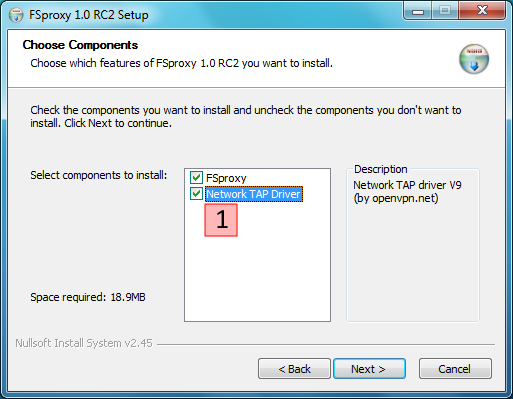
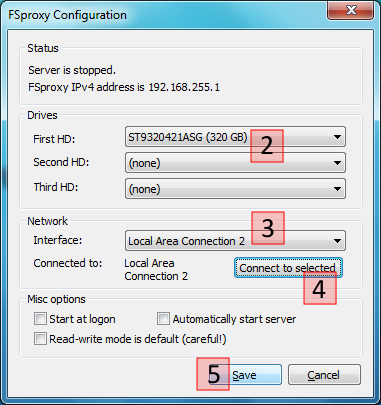
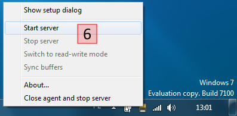
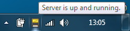
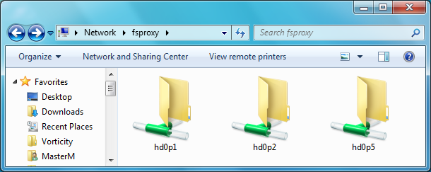

Install and configure FSproxy on your system
This quick tutorial will guide you step-by-step how to install, configure and use FSproxy on your system.
Prerequisites
- You must have administrative privileges on your system. FSproxy requires direct drive access to function. Normal users are not authorized to raw read or write to hard drives on neither version of Windows.
- FSproxy uses 192.168.255.0 private network to communicate with Windows. If you're using this address space (doubtful) you must reconfigure your network before proceeding.
- Download and install Visual C++ 2008 Redistributable package for x86 architecture.
Installation
Step 1
- Download and run FSproxy setup.
- During installation make sure to leave Network TAP Driver option checked 1 or you will not be able to start FSproxy server. Uncheck it only if you already have TUN/TAP Driver from http://openvpn.net installed on your system, but keep in mind that FSproxy will reconfigure it's IPv4 address.
- The installer will detect your Windows architecture (x86 or x64) and correct version of Network TAP Driver will be installed.
- After installation leave Configure FSproxy checked and click Finish. You should see FSproxy configuration dialog.

Step 2
- From hard drive selection menu 2 select up to 3 physical drives.
- Network interfaces drop-down 3 will contain all TAP interfaces currently installed on your system. Select the one you wish to use for FSproxy. Most likely it will contain only one item - interface installed by FSproxy setup.
- Connect selected interface to FSproxy by clicking on 4.
- Side note: Don't check both Start at logon and Automatically start server. It doesn't currently work. See Troubleshooting for more details.
- You can save your setting now. 5

Step 3
- Now the FSproxy Server needs to be started. Right-click on the FSproxy tray icon and select 6.
- If any kind of error message pops-up you probably misconfigured something. Go back to step 2 by selecting Show setup dialog from the tray's context menu.

Step 4
- The server needs some time to start. On my machine it takes about 5 to 10 seconds.
- Both FSproxy setup dialog and tray icon tooltip show current server status. Wait for server to be up and running and proceed to final step.

Step 5
- Partitions mounted by FSproxy can be accessed by typing \\fsproxy (or \\192.168.255.1) in the address bar of Windows Explorer.
- You can of course map a partition as network drive if you wish.
- More detailed server status and troubleshooting information can be viewed at http://fsproxy (or http://192.168.255.1).

That's all
FSproxy is now properly installed. Please
contact me if you find any bugs or if you wish to send greetings/fuckings etc. :-)
There are no comments on this page. [Add comment]